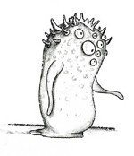

Sono ormai tre giorni che fuggo dai Turlok. Solo di giorno, però, perché la notte i Turlok fanno pausa, così per non affaticarmi troppo, faccio pausa anch’io. Il movimento, soprattutto a piedi, in questa landa arida ed erosa dai venti, è pressoché impossibile. Le pietre che affiorano dalle numerosi paludi risucchianti, ti graffiano e tagliuzzano i piedi come fossero vetri spaccati. Non fosse per questo disagio non volerei, d'altronde le scarpe alate che mi regalò lo Gnomo Pazzo si consumano rapidamente. Ma i Turlok non ne hanno bisogno, sono demoni alati! I Turlok non ammazzano, stritolano! Hanno fauci iniettate di denti aguzzi, la loro vista è acuminata dieci volte di più di un’aquila. Si narra perfino che Baolin il Mago pensò di essergli sfuggito solo perché credeva di averli seminati dopo che per un intero mese ne aveva persa ogni traccia. Bhè, il giorno dopo lo riacciuffarono. Baolin chiese spiegazioni, la risposta fu semplice :
-Ci siamo fermati un attimo in pasticceria perché avevamo fame.
I Turlok sono capaci di tutto, sono intelligentissimi, ma io più di loro. Così mi fermo di colpo e li aspetto. Loro arrivano e mi guardano stupito con i loro duecento occhi obliqui.
-Basta, sono stufo, non scappo più!
-Ma non puoi, tu DEVI fuggire.
-No, voglio combattere.
I Turlok odiavano combattere, loro dovevano inseguire la preda e basta, inseguire ed uccidere, in questo erano i più abili della Terra di Mendor, ma combattere… mai! Un Turlok non si sarebbe mai battuto. Così se ne andarono, e io potei rimettermi a camminare…